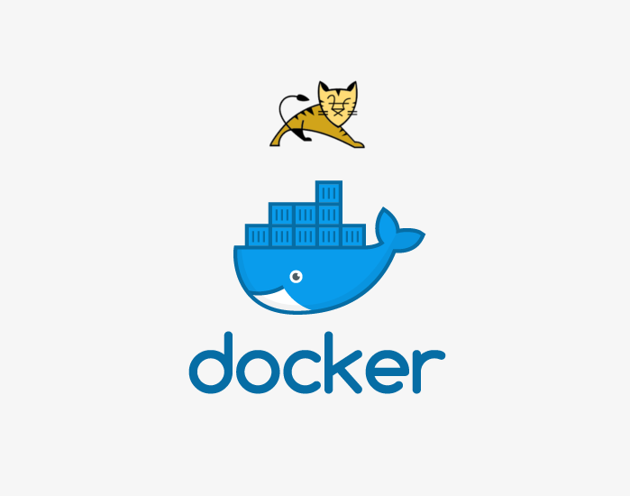

手把手教你在容器云平台上部署Java 应用
在 2019-11-07 Thursday 发布于 Java 分类 • 3 min read

前言¶
这篇教程会使用 Tomcat + PostgreSQL 创建一个 待办清单 (todolist) 应用. 并部署到OpenShift上.以此来演示完整的java 应用上容器平台(OpenShift)的流程.
先决条件¶
- 基本的Java 8和Tomcat知识
- OpenJDK 8, Tomcat 8, Maven的本地安装版本
- 基本的Git知识
- OpenShift 4的运行实例
- 确保OpenShift容器平台的实例正在运行并且可用。另外，请确保已安装CLI客户端
oc，并且可以从命令shell该命令，以便可以使用它通过账号和密码登录。
设置数据库¶
Java 应用程序几乎总是与数据库一起使用。对于本地开发，请使用PostgreSQL数据库。(使用MySQL的过程是完全一样的, 只是安装的为MySQL或MariaDB).
步骤:
- 安装数据库:
$ sudo yum install -y postgresql postgresql-server postgresql-devel - 初始化数据库:
$ sudo postgresql-setup initdb. 此命令会创建/var/lib/pgsql/data目录, 数据存在这个目录. - 启动数据库:
$ sudo systemctl start postgresql.service - 数据库启动后, 创建普通账户:
$ sudo -u postgres createuser -s jws. 请注意，创建的用户没有密码。
写 Java 应用¶
如果要从头开始安装java和tomcat，则必须先安装OpenJDK 8 。然后，您可以继续编写应用程序。
步骤:
- 安装 OpenJDK8:
$ sudo yum install java-1.8.0-openjdk-devel.x86_64 - 验证java版本:
$ java -version输出示例:openjdk version "1.8.0_171 - 下载JAVA IDE并安装配置, 如IDEA或Eclipse.https://www.eclipse.org/downloads/
- 从这个链接下载Tomcat 8 应用: https://tomcat.apache.org/download-80.cgi. 然后解压即可:
tar -xvzf apache-tomcat-8.5.47.tar.gz -C /opt/. 那么Tomcat的Home目录就是:/opt/apache-tomcat-8.5.47 - 下载Maven并安装. https://maven.apache.org/download.cgi
- 下载JDBC驱动.
- 打开IDE新建一个JAVA工程 -
todolist-jdbc, 然后进行编码. 工程的结构如下: (源码链接: https://dev.tencent.com/u/east4ming/p/openshift-quickstarts/git/tree/1.2/tomcat-jdbc)
$ tree .
.
├── pom.xml
└── src
└── main
├── java
│ └── org
│ └── openshift
│ └── quickstarts
│ └── tomcat
│ ├── dao
│ │ ├── JdbcTomcatDAO.java
│ │ └── TomcatDAO.java
│ ├── model
│ │ └── TomcatEntry.java
│ ├── service
│ │ └── TomcatService.java
│ └── servlet
│ └── MainServlet.java
└── webapp
├── WEB-INF
│ ├── index.html
│ └── web.xml
└── resources
└── css
├── bootstrap-theme.min.css
└── bootstrap.min.css
- 生成相关依赖项
pom.xml: 如JDBC和框架. 构建使用maven. - 将数据库配置为JNDI资源, 简单示例如下:
/opt/apache-tomcat-8.5.47/conf/context.xml
<Resource name="jboss/datasources/defaultDS" auth="Container" type="javax.sql.DataSource"
maxTotal="25" maxIdle="5" maxWaitMillis="5000"
username="root" password="mypassword" driverClassName="org.postgresql.Driver"
url="jdbc:postgresql://localhost/test"/>
- 启动tomcat查看日志确定数据库是否已可以正常连接.
创建 index 页面¶
概述如下, MVC模式:
- Model:
TomcatEntry类,getSummary()setSummary()等方法. 见https://dev.tencent.com/u/east4ming/p/openshift-quickstarts/git/blob/1.2/tomcat-jdbc/src/main/java/org/openshift/quickstarts/tomcat/model/TomcatEntry.java - View:
index.html. 包含对Summary的POST和GET http method. 见https://dev.tencent.com/u/east4ming/p/openshift-quickstarts/git/blob/1.2/tomcat-jdbc/src/main/webapp/WEB-INF/index.html - Controller:
MainServlet.java. 包含MainServlet类, 包含doPost()``doGet()等方法
用IDE, 配置tomcat运行验证页面是否可用.
通过访问http://localhost:8080 来查看页面. 如果没有看到该页面，可以查看tomcat的输出日志。
在 OpenShift 上配置应用¶
为了使您的应用程序与在OpenShift Container Platform中运行的PostgreSQL数据库服务通信，您必须编辑其中的写死的部分以使用环境变量。
最终运行在OpenShift之上的代码和本地代码差别其实很小. 如果最初运行在本地或开发环境. 那么类似以下的代码就会写死, 作为对比, 如果是OpenShift, 则建议使用环境变量ENV:
pom.xml原始版本:
<build>
<plugins>
<plugin>
<artifactId>maven-surefire-plugin</artifactId>
<version>3.1.0</version>
<configuration>
<skip>true</skip>
</configuration>
</plugin>
</plugins>
</build>
pom.xml OpenShift版本: 善用变量 (详见${}内的内容)
<build>
<plugins>
<plugin>
<artifactId>maven-surefire-plugin</artifactId>
<version>${version.surefire.plugin}</version>
<configuration>
<skip>true</skip>
</configuration>
</plugin>
</plugins>
</build>
JdbcTomcatDAO.java原始版本:
private DataSource lookupDataSource() {
try {
Context initialContext = new InitialContext();
try {
return (DataSource) initialContext.lookup("jboss/datasources/defaultDS");
} catch (NameNotFoundException e) {
Context envContext = (Context) initialContext.lookup("java:comp/env"); // Tomcat places datasources inside java:comp/env
return (DataSource) envContext.lookup(System.getenv("DB_JNDI"));
}
} catch (NamingException e) {
throw new RuntimeException("Could not look up datasource", e);
}
}
JdbcTomcatDAO.java OpenShift版本: 善用环境变量 ENV (详见: System.getenv)
private DataSource lookupDataSource() {
try {
Context initialContext = new InitialContext();
try {
return (DataSource) initialContext.lookup(System.getenv("DB_JNDI"));
} catch (NameNotFoundException e) {
Context envContext = (Context) initialContext.lookup("java:comp/env"); // Tomcat places datasources inside java:comp/env
return (DataSource) envContext.lookup(System.getenv("DB_JNDI"));
}
} catch (NamingException e) {
throw new RuntimeException("Could not look up datasource", e);
}
}
使用 Git¶
在OpenShift Container Platform中构建应用程序通常需要将源代码存储在git存储库中(建议)，因此如果尚未安装git，则必须进行安装。
前提:
- 安装git
步骤:
- 确保位于工程目录中;
- 初始化代码并提交到git:
$ git init
$ git add .
$ git commit -m "initial commit"
- 提交应用程序后，必须将其推送到远程存储库。如GitHub帐户，您可以在其中创建新的存储库。
- 设置指向您的
git存储库的远程服务器：$ git remote add origin git@github.com:<namespace/repository-name>.git - 将您的应用程序推送到远程git存储库。
$ git push
部署应用到 OpenShift¶
您可以将应用程序部署到OpenShift容器平台。
在OpenShift上创建java-app项目后，您将自动切换到新的项目namespace。
在OpenShift Container Platform中部署应用程序涉及三个步骤：
- 从OpenShift容器平台的PostgreSQL 镜像创建数据库服务。
- 从与数据库服务连接的OpenShift Container Platform的
JBoss Web Server 3.1 Apache Tomcat 8 builder(REDHAT基于开源版tomcat做了部分定制, 可以和使用开源版tomcat一样使用它) 镜像(docker image)和java源代码创建java服务。 - 为您的应用程序创建路由和域名。
步骤:
- 要部署 JAVA 应用程序，请为该应用程序创建一个新项目:
$ oc new-project java-app --description="Todolist Java application" --display-name="Todolist + JDBC JAVA Application"
创建数据库服务¶
您的Java 应用程序需要正在运行的数据库服务。对于此服务，使用PostgeSQL数据库镜像来创建。
要创建数据库服务，您将使用oc new-app命令。对于此命令，您必须传递一些必要的环境变量，这些变量将在数据库容器内部使用。这些环境变量是设置数据库的用户名，密码和名称所必需的。您可以将这些环境变量的值更改为所需的任何值。变量如下：
POSTGRESQL_DATABASEPOSTGRESQL_USERPOSTGRESQL_PASSWORD
设置这些变量可确保：
- 存在具有指定名称的数据库。
- 存在具有指定名称的用户。
- 用户可以用指定的JDBC配置访问指定的数据库。
步骤:
- 创建数据库服务：
$ oc new-app postgresql -e POSTGRESQL_DATABASE=db_name -e POSTGRESQL_USER=username -e POSTGRESQL_PASSWORD=password - 观察进度:
$ oc get pods --watch
创建 Java 服务¶
要将应用程序带入OpenShift容器平台，必须指定一个应用程序所在的存储库。
步骤:
- 创建JAVA服务，并指定在创建数据库服务时设置的与数据库相关的环境变量：
$ oc new-app path/to/source/code --name=todolist-jdbc \
-e POSTGRESQL_USER=username -e POSTGRESQL_PASSWORD=password -e POSTGRESQL_DATABASE=db_name -e DATABASE_SERVICE_NAME=postgresql \
-e DB_JNDI="jboss/datasources/defaultDS"
- 使用此命令，OpenShift Container Platform可以获取源代码，设置builder 以构建您的应用程序docker 镜像，并将新创建的镜像与指定的环境变量一起部署。该应用程序名为
todolist-jdbc。 - 通过查看
todolist-jdbc的DeploymentConfig的JSON配置来验证是否已添加环境变量：$ oc get dc todolist-jdbc -o json - 应该会看到下列内容:
env": [
{
"name": "POSTGRESQL_USER",
"value": "username"
},
{
"name": "POSTGRESQL_PASSWORD",
"value": "password"
},
{
"name": "POSTGRESQL_DATABASE",
"value": "db_name"
},
{
"name": "DATABASE_SERVICE_NAME",
"value": "postgresql"
}
{
"name": "DB_JNDI",
"value": "jboss/datasources/defaultDS"
}
],
- 检查构建过程：
$ oc logs -f build/todolist-jdbc-app-1 - 构建完成后，请查看OpenShift Container Platform中正在运行的Pod：
$ oc get pods. 您应该看到以todolist-jdbc-<number>-<hash>开头的pod，这是您的应用程序在OpenShift Container Platform中运行。 - 如果要在程序正常运行之前, 先运行数据库迁移脚本来初始化数据库. 有3方法:
- 从pgsql中手动进行:
- 使用
rsh命令进入到容器中:$ oc rsh <PGSQL_POD_ID> - 使用pgsql客户端运行sql初始化脚本
- 使用
- 可以创建个模板 -
template对象, 在其中添加部署前要执行的hook, 来自动触发.
- 从pgsql中手动进行:
创建应用的访问域名¶
这样您可以公开服务以为您的应用程序创建路由。
步骤:
要给服务提供外部可访问的域名（例如，使用OpenShift容器平台的router提供todolist.apps.example.com）来公开该服务 。您需要输入以下内容来发布前端服务：
$ oc expose service todolist-jdbc --hostname=todolist.apps.example.com
注意:
前提是
todolist.apps.example.com已经被解析到OpenShift集群的router上了.一般OpenShift管理员会配置泛域名
*.apps.example.com都解析到OpenShift的router上.
总结¶
以上介绍了java 应用源代码部署的方式. JAVA应用要部署在OpenShift上.
- 建议把JAVA应用放到Git上. 这样方便追踪.
- 建议代码里不确定的内容使用环境变量ENV来进行获取和配置.
- 数据库可以使用OpenShift自带的pgsql, MongoDB, Mysql容器镜像;
- 与纯docker或纯k8s相比, 应用可以直接源代码+ openshift的tomcat8 builder镜像自动生成可用的镜像并部署. 因为:
- builder镜像内包含maven等builder工具. 它会将源码pull下来, maven编译为WAR包, 同时会根据传入的环境变量生成相关配置的xml文件. 再把war包放到指定目录下.
- 然后生成新的镜像并部署.
oc new-app这个命令其实除了创建deploymentpod外, 一般还会根据基础镜像的EXPOSE自动创建相关SERVICE.- 最后要使外部可以访问该应用. 使用
oc expose service <service_name>将应用发布到某个域名.
当然, 其实上边这些步骤下来, 还是有些麻烦的. 另外还会有一些特殊情况无法使用这种方式:
- 如果不方便提供或开放源码, 只能提供二进制包(如war包), 可以使用war包进行. 简单示例如下:
$ oc start-build billing-service --from-file=todolist.war - 如果自己想通过Docker image方式提供, 可以这么做:
$ oc new-app -e MYSQL_USER=product -e MYSQL_PASSWORD=password --docker-image=172.30.182.75:5000/deploy-project/msa-product --name=product-service - 如果自己已经通过Jenkins实现了CI/CD自动化流程. 那么也可以结合起来来用. jenkins有openshift插件, 或者也可以在jenkins的slave节点上安装
oc客户端. - 最后, 最强大快捷而又为程序员所习惯的方法, 是通过
odo工具. 这是OpenShift 4新发布的专门针对开发人员的 OpenShift 命令行. 使用方式和git push非常像, 封装了很多程序员不太了解的容器和K8S的概念. 你要做的就是类似前面写的: init, commit, push就好了. (以后有时间详细说明下)